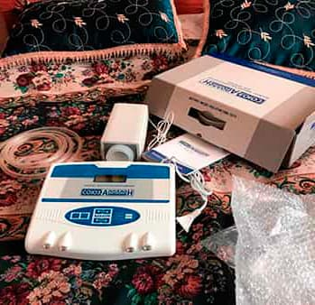
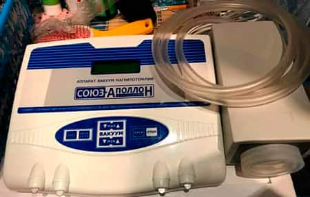
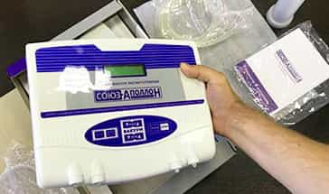
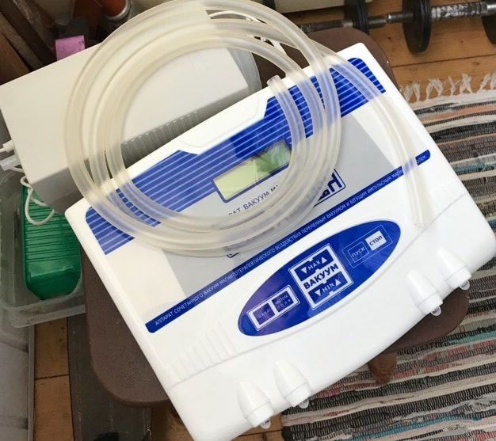
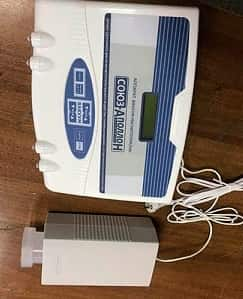

¡El número de hombres con problemas de potencia bate nuevos récords en España! Tratamientos innovadores contra la impotencia y la prostatitis ¡en 7 días!

El año 2022 ha puesto un récord en el número de hombres con impotencia en España. Datos aterradores y un nuevo enfoque para resolver el problema de una vez por todas.
La Sociedad Española de Urólogos presentó en el 42º congreso de la Sociedad Internacional de Urología un informe con estadísticas escalofriantes sobre el número de enfermedades urológicas en España.
José Luis Hidalgo es profesor, urólogo de renombre. Jefe de Clínica y Servicio del Hospital Universitario Gregorio Marañón. Doctor en Medicina y Cirugía con reconocimiento europeo y premios destacados. Miembro del Consejo Europeo de Urología. Miembro del Colegio Americano de Cirujanos (FACS). Miembro del Consejo Europeo de Medicina Sexual (FEBSM).
La mejora de los diagnósticos, el ensayo de nuevas técnicas y la ineficacia de los tratamientos hospitalarios fueron los principales temas tratados en el congreso.
A modo de resumen, los urólogos citaron las estadísticas de 10 años de trabajo:
- Entre 2021 y 2022, hay un 60,5% más de pacientes con enfermedades genitourinarias.
- Los casos de impotencia sexual masculina aumentaron un 57%.
- Hay un 180,7% más de casos de neoplasias malignas, lo que supone triplicar la cifra de 2021.
.jpg)
¿Por qué es importante para nuestro país el problema de la disfunción eréctil?
Los hombres españoles retrasan el tratamiento, ignorando los primeros signos de falta de potencia y prostatitis. Pero la enfermedad siempre se desarrolla por etapas.
Etapas de la impotencia y sus consecuencias
Fase 1. Puedes experimentar una pérdida ocasional de potencia después de beber alcohol o por sí mismo. A veces no tienes "ganas de sexo". La mayoría de la gente lo atribuye al trabajo duro, al estrés y a otras cosas. Sin embargo, esto ya es el primer indicio de que sólo empeorará con el tiempo.
Fase 2. La potencia sexual desaparece cada vez con más frecuencia. Incluso cuando la hay, no es tan fuerte como antes. El pene puede caerse durante el coito o al ponerse un preservativo. Por regla general, durante este período el hombre empieza a pensar en el problema, pero se limita a tomar Viagra de vez en cuando.
Etapa 3. La potencia sexual aparece raramente. Una caída brusca de la libido. El hombre se vuelve irritable; ya no tiene energía ni voluntad para hacer nada. Se producen problemas familiares iniciales, como peleas frecuentes en la familia y adulterio, que pueden desembocar en el divorcio.
Etapa 4. Impotencia total. Ni siquiera el Viagra ayuda. Hasta el 91% de los hombres en esta etapa se quedan solteros - las mujeres rara vez viven con hombres impotentes, y si lo hacen, sufren. Aparece la depresión, así como diversas dolencias físicas. Nuestro cuerpo está diseñado para que su función principal sea la reproducción. En cuanto se le priva de ella, el organismo empieza a deteriorarse muy rápidamente.
En España, el 90% de los hombres tienen problemas en la cama y el 73% de los hombres son impotentes a los 40 años.
Estos síntomas, aparentemente insignificantes a primera vista, casi siempre acarrean consecuencias irreparables:
Impotencia

MOSTRAR FOTO
Cáncer de próstata. Es la causa más frecuente de muerte (hasta un 88%) en los hombres que sufren impotencia.
MOSTRAR FOTO
Adenoma de próstata
MOSTRAR FOTO
Cálculos renales. Los cálculos renales también se producen debido a una alteración del riego sanguíneo de los órganos pélvicos.

MOSTRAR FOTO
«Una actividad sexual irregular reduce la esperanza de vida y provoca un envejecimiento prematuro.
La prostatitis se da en el 100% de los casos, es decir, en todos los hombres que sufren impotencia y no tienen actividad sexual.»
Alberto Kañevsky, Profesor, Miembro del Consejo Europeo de Urólogos
Viagra: una droga sintética mortal
Debido al hecho de que la potencia puede perderse por completo, muchos hombres intentan deshacerse de los problemas de potencia en cuanto empiezan a aparecer. Pero hasta hace poco era imposible restaurar la potencia por completo - los fármacos disponibles (como Viagra) mejoran la potencia SÓLO durante un cierto período de tiempo. Además, el uso frecuente de Viagra multiplica por diez el riesgo de infarto.
En el congreso también se debatió qué tipo de problemas tienen los hombres con la potencia tras abusar de los productos químicos.

Discusión sobre las complicaciones después de tomar Viagra (la foto muestra la cirugía de un paciente con impotencia total, y las complicaciones cardíacas causadas por tomar Viagra).
El primer peligro es la enorme cantidad de medicamentos falsificados en las estanterías de las farmacias españolas. Los estimulantes falsificados por potencia representan entre el 34% y el 73% del mercado de todos los estimulantes en las farmacias españolas.
El segundo peligro son los graves riesgos para la salud derivados del consumo de Viagra. Los estimulantes sintéticos son extremadamente perjudiciales para la salud de los hombres, además de la potencia, afectan negativamente al hígado, los riñones y el corazón. Desde que la Viagra es de venta libre en nuestro país, ¡la incidencia de infarto de miocardio ha aumentado un 26%!
En la actualidad, 15 millones de hombres de todo el mundo son adictos a la Viagra y han perdido su libertad y su salud en su lucha por la potencia.
¿Cómo curar todos los problemas de potencia de una vez por todas? Esto es algo que todo hombre debería saber.
Además de debatir los problemas y las deprimentes estadísticas, también se presentó una solución a estos problemas. La Sociedad Española de Urólogos informó sobre los ensayos de un preparado único para restaurar la potencia y curar la prostatitis, así como para prevenir enfermedades del aparato urogenital masculino.
Se trataba de un producto natural «PROS TONIX», que ha superado todos los ensayos clínicos a gran escala en 2020.
.jpg)
La Sociedad Española de Urólogos presenta la nueva fórmula natural «PROS TONIX»
Victor Manuel Blazquez, Miembro Correspondiente de la Real Academia Nacional de Medicina, Profesor, Jefe del Departamento de Urología de la Universidad Complutense de Madrid.
«Ha sido el desarrollo más difícil, pero más necesario de la Sociedad Española de Urología»
Victor Manuel Blazquez. Profesor de Urología. Especialista en disfunción eréctil masculina. Miembro del Consejo Europeo de Urólogos. Autor y editor de 19 LIBROS sobre urología y andrología.
«PROS TONIX» es un activador biológico. Esto significa que sólo contiene componentes naturales que actúan directamente sobre la próstata y los órganos pélvicos, aumentan el riego sanguíneo del pene y potencian la síntesis natural de testosterona.
A diferencia de varias píldoras sintéticas, «PROS TONIX» restaura la potencia natural.
Del tipo que se produce sin pastillas. Como consecuencia, los hombres ya no van a la farmacia a por Viagra o productos similares.

La investigación y los ensayos clínicos han arrojado los siguientes resultados:
- Restablecimiento de la función eréctil - 99,7%.
- Aumento de la libido - 86,4%.
- Duración de las relaciones sexuales: aumento a 60-90 minutos.
- Riesgo de infarto e ictus: reducido al 0,4%.
- El riesgo de trombosis venosa profunda se reduce al 0,7%.
- El riesgo de parada cardiaca súbita se reduce al 0,1%.
- Aumento de la longitud y anchura del pene - 100% de los sujetos.
En la práctica, «PROS TONIX» estimula la función sexual y ayuda a resolver los siguientes problemas masculinos:
- Aumenta el deseo sexual;
- Aumenta la intensidad de las sensaciones durante el coito, el orgasmo se hace más agudo y más largo;
- Aumenta la libido y prolonga la potencia en los hombres;
- Acorta la pausa refractaria entre erecciones, aumenta el volumen y la calidad del semen;
- Favorece el sistema inmunitario y la función suprarrenal;
- Tiene un ligero efecto antiinflamatorio sobre la glándula prostática;
- Tiene un efecto notable en los tejidos cavernosos del pene, aumentando así su tamaño. Todos los voluntarios notaron un aumento de la longitud y el grosor del pene en estado de erección (hasta 1-2 cm de longitud y 1 - 1,5 cm de anchura).
Se ha demostrado que la salud masculina se restaura realmente como resultado de tomar el medicamento. No sólo mejora la potencia, sino que también aumenta el tamaño del pene y la actividad sexual.
También en la conferencia, representantes de la Sociedad Española de Urología presentaron los protocolos de los ensayos clínicos y todos los demás documentos que demuestran la eficacia y seguridad del dispositivo.
Observaciones:
Кстати, видел по Тв ролик про этот прибор, сейчас прикреплю.




